마음 1 / 2
고치기슬픔
가슴아픈걱정되는고단한
크기
8/ 10
원자료의 수채 파스텔 일곱 색을 접근성 기준으로 정규화하고 공포·혐오 두 계열을 더한 아홉 계열 토큰과, 그 위에 올라가는 구성요소의 모양·상태입니다. 색은 감정을 찾기 쉽게 돕는 라벨이지 좋고 나쁨이나 점수가 아닙니다. 최종 갱신 2026-09-25 · 최신 결정 D-096까지. 본문은 지금 유효한 것만 남기고, 대체된 옛 설계는 모두 맨 아래 이전 결정(이력) 절로 옮겼습니다.
무드 v4(D-061): 흰 바탕, 납작한 면, 그림자·상자·다이컷 테두리 없음(예외: 조약돌 원본 이미지, 편지 종이 카드의 옅은 두 겹 그림자 — D-096), 친구는 큰 그림으로 그대로 섭니다. 화면 말투는 해요체 하나이고 이야기는 '길과 노트'입니다. 오늘·마음 고르기·편지·완료 같은 장면은 아래에 축소한 정지 견본으로 있고 움직임과 조작은 web/ 화면 시안에서 봅니다. 화면 규칙의 정본은 DESIGN_SYSTEM·UX_SPEC이고 이 전시장은 부품 견본입니다.
DESIGN_SYSTEM §2의 아홉 원칙입니다. 아래 모든 부품·화면 견본이 여기에 기댑니다.
.card)의 옅은 두 겹 그림자(D-096). 친구를 카드·타일·테두리에 담지 않습니다(D-061).prefers-reduced-motion을 존중합니다.서비스 색은 앱의 구조·행동·위치를 말합니다. 감정 색과 역할이 달라 어떤 감정 색 단계와도 ΔE 7 이상 떨어져 있습니다(mint 최소 15.4, ink 13.3). mint는 흰 바탕 위 단독 사용 금지(1.29:1) — 항상 ink 위이거나 ink 테두리 안입니다. 색각 이상에서는 mint도 몇몇 감정 색과 붙으므로 형태 단서를 함께 둡니다.
주 버튼은 ink 채움 알약 + 흰 글자(16.4:1)입니다. 세부 감정 화면에서도 계열 색이 아니라 ink입니다 — 감정 색은 분위기, ink는 행동입니다.
장면 전용 색은 서비스 색과 별개의 묶음이고 design/tokens.json이 정본입니다(하네스는 감정·중립·의미 색만 이 전시장과 대조하므로 이 묶음은 값이 어긋나지 않게 손으로 맞춥니다). 숲(forest)은 오늘 화면 한 곳의 어두운 숲이고 감정 색과 섞지 않습니다(D-062·D-067·D-072) — 달력·통계·설정은 밝은 바탕과 원래 탐색을 그대로 씁니다(D-070). 언덕(land)은 마음 고르기·완료·온보딩의 초록 언덕과 길(D-061·D-066)이자 크기·이유·오늘 있었던 일·칭찬·감사·편지 책상의 이야기 있는 배경이 파생하는 바탕색입니다(D-069, 모두 color-mix로 만들며 새 토큰을 늘리지 않습니다), 종이(paper)는 편지·메모의 종이와 봉투입니다(D-063). 색은 큰 면에만 쓰고 소품은 절제합니다.
forest — 오늘 화면land — 마음 고르기 · 완료 · 온보딩paper — 편지각 계열 6단계. chip은 100 위에 900 글자, 강조 테두리와 차트는 500(기쁨만 700). 화면을 넓게 물들이는 면은 300 하나뿐이고 세부 감정 화면과 편지의 감정 카드에만 씁니다(D-053·D-063). 왼쪽 열은 원자료의 계열 설명입니다.
고른 계열의 300 면이 넓게 물드는 곳은 편지의 감정 카드(감정당 한 장) 한 곳뿐입니다. 세부 감정 화면은 D-071이 300에서 100·50을 6:4로 섞은 연한 색으로 옅혔습니다 — 진한 300 배경에서는 친구 몸 색(가장 진한 300)과 색차가 좁아(ΔE 최소 8.6) 친구가 배경에 묻혔기 때문입니다(연한 배경에서는 최소 16.6로 벌어집니다). 그 밖의 화면은 흰 바탕입니다. 진하기는 50·300·500을 화면으로 비교해 사용자가 300을 골랐습니다(2026-09-21, 편지 카드는 그대로 300). 계열이 여럿이어도 계열마다 화면(카드)이 따로 있고 크기·순서·밝기로 우열을 만들지 않습니다. 글자는 중립 text·ink이고 300·연한 배경 위 모두 흰 글자를 쓰지 않습니다(300 위 ink 글자 6.48~12.19:1, 연한 배경 위 12.5:1 이상). 색만으로 전달하지 않도록 계열 이름 글자와 친구·조약돌을 함께 둡니다. 친구는 상자 없이 면 위에 그대로 서고 뒤에 까는 면이 없습니다(D-061).
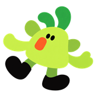
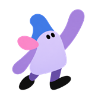
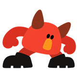
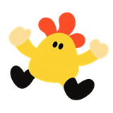
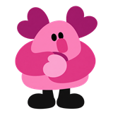
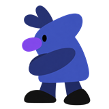
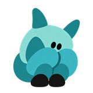
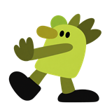
Pretendard Variable을 self-host 웹폰트로 싣습니다(D-057이 D-034(d)를 번복, SIL OFL 1.1, 약 2.0MB). 굵기 한 벌만 선언하지 않고 가변 범위 하나로 선언합니다 — 그렇지 않으면 본문이 그 굵기로 그려집니다. hero는 큰 제목 한 줄에만 씁니다(D-057) — 마음 고르기·완료. 온보딩 이야기의 문장(ob-copy h2)은 장면마다 자리·크기가 있는 독립된 짜임이라 hero를 쓰지 않습니다(D-092, DESIGN_SYSTEM §6.17). 오늘 화면의 큰 질문은 글자 크기·굵기·자리를 달리한 타이포그래픽 배치(D-067)라 이 단계 밖입니다 — '오늘은 어떤'(작게) · '마음'(가장 크게, 굵기 900) + '이'(작게) · '머물렀나요?'(중간, 오른쪽으로 물러남).
눌리는 것은 ink 알약 하나(주), 보조는 옅은 회색 면, 나머지는 글자입니다. 굵은 윤곽과 그림자가 없습니다(D-061). 삭제만 danger 채움입니다. 아직 못 누르는 주 버튼은 바탕에서 만든 흐린 색(바탕+ink 12% 면, +ink 50% 글자)으로 보이되 눌러 보면 고를 자리 위에 할 일을 안내합니다(D-098). 빨간 오류는 실제 입력 오류에만 씁니다.
누름·비활성·선택을 부품마다 따로 정하지 않고 하나의 규칙으로 보입니다(DESIGN_SYSTEM §5.1, tokens.json state). 친구 토글·달력 칸·가운데 돌 같은 장면 부품은 자기 표현을 유지합니다. 부품별 명세는 docs/design-system/components/.
가까운 마음을 하나 고르면 다음으로 갈 수 있어요.
다음선택이 끝난 감정을 보여 줄 때 씁니다 — AI 감정 후보 제시처럼 감정 이름을 계열 색 점과 함께 글로 나열하는 자리. 선택 조작은 chip이 아니라 세부 감정 화면의 pill 구름이 맡습니다(D-059). 편지 카드 안의 세부 감정 알약은 감정 300 면 위의 흰 반투명 알약입니다(D-063). 같은 표기가 다른 카테고리에 있을 수 있어 카테고리 색 점을 항상 함께 둡니다.
오늘 화면의 빈 숲(하늘·나무·회색 길·풀)과 가운데 돌 하나가 숨 쉽니다. 진행 막대·로고는 두지 않습니다 — 앱 이름·로고는 미정(D-058)이라 돌이 그 자리를 대신합니다. 300ms 안에 준비되면 보이지 않고, 보이면 최소 0.6초 보입니다. 준비되면 다시 여는 사람은 로딩 화면의 숲이 오늘 화면의 숲 자리로 미끄러져 겹친 뒤 사라지고(그 위에 조약돌·큰 질문이 나타납니다), 처음 여는 사람(#/welcome)은 대신 가운데 돌에서 흰빛이 퍼지며(돌을 누를 때와 같은 전환) 온보딩 이야기가 열립니다. 실제 그림은 생성 파일 web/splash.svg(scripts/build-splash.mjs가 forest.js·tokens.json으로 만들고 verify가 어긋남을 검사합니다)입니다.
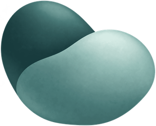
온보딩은 이야기 여섯 장면과 '시작하기 전에' 한 장입니다(#/welcome). 영상 파일·Lottie가 아니라 이미 있는 그림(친구 PNG·조약돌·언덕·노트 종이·흰빛)을 코드(WAAPI)로 움직이는 앱 안 장면 모션입니다 — 글자는 실제 텍스트라 화면 읽기·큰 글자·수정이 되고, 장면이 바뀔 때마다 aria-live로 읽힙니다. 장면마다 4.3~7.8초 뒤 자동으로 넘어가고, 누르면 바로 다음, 오른쪽 위 '건너뛰기'와 왼쪽 위 일시정지(WCAG 2.2.2)가 늘 있으며 위에 진행 막대 여섯이 있습니다. 움직임 줄이기에서는 흐름·걷기 없이 장면의 끝 모습만 보이고 자동 진행이 없으며 장면마다 '다음' 버튼이 섭니다. 첫 진입에서 보여 주고 설정의 '처음 화면 다시 보기'로 다시 엽니다. 실제 모션은 web/js/views/welcome.js가 정본입니다 — 아래는 여섯 장면의 대표 문장을 옮긴 정지 요약입니다.
AI는 많은 답을 빠르게 만들어 줘요
답 조각이 옅은 민트 위로 흘러가요그중 무엇을 고를지는 누가 정할까요?
흰빛이 번지며 답 여덟이 둘러싼 가운데에 돌 하나가 내려앉아요고르는 기준은 나를 아는 만큼 생겨요
답이 돌로 스며들고 빛이 한 번 번져요그 단서는 매일의 마음에 있어요
돌이 길 끝에 서고 언덕이 솟으며 친구 아홉이 나타나요잘 설명하지 못해도 괜찮아요
노트에 하루가 써지고 즐거움·슬픔의 조약돌이 두 이름 칸에 앉아요해석과 선택은 언제나 내가 해요
길이 세 갈래로 열리고 친구 셋이 각자 다른 길을 골라요법적 고지가 아니라 WHY의 약속 두 줄입니다 — 옛 2쪽의 PHI 미입력 안내·위기 안내 링크는 뺐습니다(위기 안내는 설정에서만 들어갑니다). 아래에서 올라온 흰 길이 나의 돌에서 끝나고 그 위에 '시작하기' 버튼이 섭니다.
정답을 정해 주지 않아요 — 감정을 진단하거나 판단하지 않아요. 어떤 마음이었는지는 내가 정해요.
내 기록은 나만의 것이에요 — 직접 쓴 일기를 자동으로 분석하거나 지켜보지 않아요.
시작하기오늘 화면은 어두운 숲과 돌 하나입니다(오늘 화면에 한해 D-050의 '바탕은 흰색·무대는 풍경이 아님'을 대체). ink 계열의 납작한 층 — 하늘 · 먼 나무 · 중간 나무 · 회색 길 · 가장자리 큰 나무 — 이고 그림자·질감이 없으며 forest 토큰만 씁니다. 숲 속 안(D-072)이라 나무 층이 촘촘하고(먼 나무 34 · 중간 나무 14그루), 옅은 빛줄기·안개·아주 느린 반딧불 여덟 점이 있으며 나무 뿌리 옆에 작은 식물(풀·양치·새싹·버섯·덤불)이 자라 조약돌이 그 사이에 앉은 것처럼 보입니다. 글자는 흰색이고 베이지(크림빛)는 쓰지 않습니다. 시작 버튼·친구·이번 주 길·한 줄 질문은 이 화면에 없습니다.
2026년 9월 22일 (화)지난 기록 ›
오늘은 어떤마음이머물렀나요?
돌을 눌러 시작해요
AI와 대화하며 쓰기 · 지금은 쉬고 있어요
기록 없음 — 조약돌은 어둡게 숲에 묻혀 있고 호버한 돌 하나(왼쪽 아래)만 켜집니다.
2026년 9월 22일 (화)지난 기록 ›
오늘은 어떤마음이머물렀나요?
오늘의 기록 보기
기록 있음 — 그날 고른 계열(슬픔·기쁨·사랑, 계열마다 돌 하나)의 돌 셋만 켜져 있습니다.
forest.tree-mid·tree-edge에 service.mint를 섞은 색)이 자라고, 아래 가장자리 큰 나무 밑은 무성한 풀과 큰 양치가 감쌉니다. 앞 풀이 조약돌 아래 모서리를 살짝 덮어 돌이 풀 사이에 앉은 느낌입니다. 큰 질문의 행간도 넓혔습니다(세 줄 사이 0.7~1.15rem). 식물은 장식이라 스크린리더에는 없습니다.button, 이름 '오늘의 마음 기록 시작하기'). 좌우로 천천히 흔들리고, 호버·초점·누르는 중에는 흰빛으로 통통 뛰며 물결이 번집니다 — 별 모양은 없습니다(D-067 ⑤). 누르면 조약돌 아홉이 돌에서 가까운 것부터 차례로 모두 켜지고(약 0.5초) 0.62초 뒤 흰빛이 화면 전체로 퍼진 다음 작성 첫 화면이 흰 화면에서 열립니다. 흰빛은 기록으로 남기지 않습니다(D-062 ⑥).sky, 짙은 남색 한 색 — D-084) 18.56:1, on 회색 길(path-near) 6.72:1. 조약돌 원본은 입체 그라데이션이 있는 예외입니다(D-050).감정 계열은 친구 아홉을 한 화면에 상자 없이 세우고 여러 개를 고릅니다(문구 '여러 개여도 괜찮아요'). 선택은 이름이 ink 알약으로 채워지고 체크가 붙고 친구가 살짝 커지는 것으로 알리며 색만으로 구분하지 않습니다. 저장되는 값은 고른 계열 코드뿐이고 위치·기울기는 장식입니다 — 아홉의 순서는 taxonomy 선언 순서이고 심리 축으로 정렬하지 않습니다(PR-001). 친구를 눌러 켜고 꺼 보세요.
초록 언덕 위 자유 배치 — 현행 시안(D-066, provisional: 사용자 확인 전)
3×3 격자 — 이전 안(QA 주소 #/write?pick=grid). 흰 바탕에 세 줄 세 칸, 위아래로 살짝 어긋나고 조금씩 기울어 있으며 모두 같은 크기입니다.
land) 한 계열뿐입니다 — 하늘은 먼 언덕색, 언덕 셋, 옅은 초록 길이고 해·구름·조약돌은 없습니다.고른 계열마다 화면 하나에서 세부 감정을 고릅니다. 배경은 그 계열 100과 50을 6:4로 섞은 연한 색이라 친구 몸 색(가장 진한 300)보다 옅고 친구가 잘 보입니다(D-071). 위쪽에 친구(상자 없이 면 위에 그대로)와 그 오른쪽의 바구니, 그 아래 진단하지 않는 질문형 제목과 pill 구름입니다. pill을 켜면 그 계열의 조약돌이 pill의 체크 자리에서 480ms 미끄러져 바구니 아가리 위에서 200ms 내려앉아 담깁니다(던지지 않습니다, D-068). 바구니는 최대 9개(아래 줄 5 + 위 줄 4)이고 개수 글자가 없으며 저장하지 않는 일시 피드백입니다. pill(끈 상태)은 300을 흰색에 45% 섞은 색에 안쪽 윤곽선 1px입니다. 검색창은 없습니다(D-065 ③) — 슬픔 53개도 가나다순 구름을 스크롤합니다.
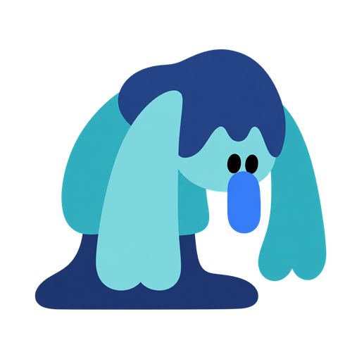
슬픔 · 1/3
슬픔 중에서
어떤 마음이었나요?
가까운 말을 여러 개 골라도 돼요. 정답은 없어요.
측정(D-071): ink 글자 대비 12.5:1 이상, pill 위 11.2:1 이상, 오류 문구는 중립 글자+'!' 표지(danger 원색은 감정 배경 위 2.2~4.2:1이라 쓰지 않습니다). 바구니 색은 배경 대비 혐오 3.47 ~ 기쁨 6.53:1입니다.
고른 계열마다 패널 하나(친구 이름·"~의 크기" → 대표 크기)가 위에서 아래로 같은 크기로 놓입니다. 회색 길(forest.path-near를 흰색에 40% 섞은 색, size.css의 --sz-road와 같은 식)이 트랙이고, 눈금은 길 위 이정표, 손잡이는 그 계열의 친구(56px, 크기는 값과 무관하게 그대로이고 값이 바뀌면 걸어서 이동), 채움은 계열 강조색(기쁨만 700), 길 뒤에 옅은 초록 언덕 실루엣(land.hill-far·mid)입니다. 그 아래 '세부 감정도 크기를 정하고 싶어요'를 누르면 세부 감정별 같은 구조의 작은 길이 펼쳐지고 손잡이는 그 계열의 조약돌입니다 — 기본값은 대표 크기이며 따로 바꾼 것만 '따로 정함'이 붙고 '대표 크기와 같게'로 되돌릴 수 있습니다. 저장 계약은 그대로입니다 — 세부 크기를 따로 정하지 않은 세부 감정에는 대표 크기가 저장됩니다.
매우 커서 일상 행동에 큰 영향을 준 감정
세부 감정도 크기를 정하고 싶어요 ⌄
대표 크기와 같게
터치 스크롤이 슬라이더를 스쳐 값이 바뀌지 않도록 얇은 입력층을 둡니다(마우스는 즉시, 터치는 탭이거나 가로 6px 넘게 끌 때만). 진짜 컨트롤은 무대를 덮은 투명 native range이고, 키보드 초점은 친구 둘레의 3px ink 링이 알립니다.
이유 화면(components/reason.js, css/reason.css)은 줄 종이 노트 한 장(−0.6°, 민트 테이프)과 그 아래 초록 언덕에 나란히 선 이번에 고른 친구들입니다. 친구는 taxonomy 선언 순서로 서고(1~3명 96px · 4~6명 72px · 7~9명 58px, 5명부터 두 줄, 발끝 정렬), 이름 아래에 대표 감정(계열 이름)을 함께 적습니다(예: 설이 / 슬픔). 이야기 줄은 '고른 마음이 곁에 있어요'이고, 친구는 걸어 들어오는 1회 연출과 2% 숨쉬기뿐 글에 반응하지 않습니다(D-050·D-061 — 한 화면의 친구는 모두 같은 크기). 장면은 문서 흐름 안에 있어 고정 위치로 화면을 덮지 않으므로 모바일 키보드가 올라와도 글 쓰는 칸을 가리지 않습니다.
이런 마음이 든 이유
준비를 많이 했는데 반응이 없어서 평가받지 못한 느낌이었다.
고른 마음이 곁에 있어요
색은 마음 고르기와 같은 초록 언덕(land.hill-far·mid·near)입니다. '오늘 있었던 일·칭찬·감사'(components/notes.js, D-069 ③)도 같은 종이·초록 언덕 톤이되 화면마다 다른 이야기입니다 — 사건은 아침 길 들머리와 시작하는 돌(stoneImg("rest"), D-062의 '돌은 오늘 화면'을 이만큼 넓힙니다), 칭찬은 크림 쪽지 셋과 높이 뜬 해(이번에 고른 계열의 조약돌이 언덕에 같은 크기로 놓입니다, 개수 글자·누적 없음), 감사는 끈에 꿴 paper 카드 셋과 노을·등불(조약돌은 빼서 '쌓인다'로 읽히지 않게 합니다, D-050). 반복 움직임은 화면마다 하나(해 또는 등불 빛, 3% 안쪽)이고 움직임 줄이기에서는 애니메이션이 없습니다. '이대로 남길까요'(편지)의 숲 속 빈터(D-085)는 위 '편지' 절을 보세요(같은 이야기 가족의 마지막 화면입니다, D-069).
검토 단계('이대로 남길까요?')는 나에게 쓰는 편지입니다. 닫힌 봉투(크림 종이 색, 민트 인장)를 보이고 봉투를 열지 않아도 '남기기'를 누를 수 있습니다. 봉투를 열면 고른 조약돌이 튀어나오고 카드가 올라오며, 옆으로 넘기되 이전·다음 화살표와 점을 함께 둡니다(스와이프만 두지 않음). 카드는 한 장만 보입니다(D-096 ② — 옆 카드가 살짝 보이는 엿보기·좌우 흐림 마스크 없음, 넘길 게 더 있다는 신호는 점과 화살표뿐) — 카드(.card)에는 '종이가 배경 위에 놓인' 느낌의 옅은 두 겹 그림자를 둡니다(D-096 ③, 그림자 없음 원칙의 두 번째 예외). 기록 상세(달력)는 같은 편지의 읽기 모드이고 ⋯에서 고치기·완료 취소·삭제로 갑니다. 움직임 줄이기에서는 봉투 열림 연출 없이 카드가 바로 나옵니다.
봉투를 눌러 열어요
마음 1 / 2
고치기슬픔
2026. 9. 2. 수
오늘 있었던 일
고치기회의에서 발표를 마쳤는데 팀장이 별말이 없었다.
이런 마음이 든 이유
고치기준비를 많이 했는데 반응이 없어서 평가받지 못한 느낌이었다.
칭찬
고치기끝까지 발표를 마쳤어요
— 오늘의 나에게
카드 아래의 이전·다음 화살표와 점(44px 목표)
paper 묶음(tokens.json)입니다.forest-*는 쓰지 않습니다.빈터의 색은 새 토큰이 아니라 land.hill-*와 흰색(neutral.bg)을 섞은 파생색입니다(color-mix, letter-scene.css — 나무 실루엣 44·58·70%). 조약돌은 원본 그림(D-050 예외)을 바꾸지 않고 채도·밝기를 낮춘 필터와 알파 안 잔결, 밑면 그림자로 무광 처리합니다. 봉투를 여는 순간 입구에서 빛이 한 번 퍼지고(1.5초) 빛 알갱이 몇 개만 아주 느리게 움직입니다(움직임 줄이기에서 없음). 편지 틀은 위 글과 버튼 줄 사이 정중앙(닫힌 봉투 중심 = 열린 카드 묶음 중심)이라 열려도 자리가 튀지 않습니다.
저장을 마친 완료 화면은 흰 하늘 아래 색 언덕 셋(land)과 흰 길이고 옅은 해가 걸립니다. 그날 고른 친구와 조약돌만 서고, 친구는 크기가 모두 같습니다 — 고른 수에 따라 전원이 함께 커지고 줄어들 뿐 우열이 없고 위치만 자리마다 다릅니다(D-061 ④). 크기는 고른 수로 정해집니다: 1명 210px · 2명 164px · 3명 136px · 4명 이상 104px. 은은한 움직임(친구가 차례로 올라오는 1회 연출, 2% 숨쉬기, 해 고리 맥박)이 있고 움직임 줄이기에서는 정지합니다. 큰 제목은 짧은 사실 문장('오늘의 마음을 남겼어요')이고 칭찬·성장·연속 기록 문구를 쓰지 않으며 저장 뒤 칭찬·감사 빛은 두지 않습니다(D-062 ⑥).
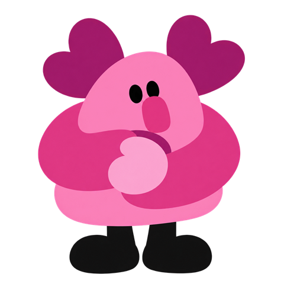
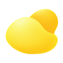
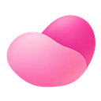
완료 화면 — 그날 고른 계열(슬픔·기쁨·사랑)의 친구와 조약돌만.
온보딩(D-092)은 이 정적 견본으로 보여 주지 않습니다. 옛 온보딩 첫 쪽(아홉 친구가 선 언덕 한 장)은 앱 안에서 코드(WAAPI)로 움직이는 여섯 장면 이야기로 바뀌었습니다 — 이야기의 ④~⑥장면은 같은 land 색 토큰을 다시 그려 쓰지만 흐름·걸음·전환이 있어 스냅샷 한 장으로는 옮기지 못합니다. 실제 장면은 web/js/views/welcome.js(#/welcome)에서 보고, 부품·값은 DESIGN_SYSTEM §6.17이 정본입니다.
완료(ink 조약돌 칸) / 임시저장(옅은 돌 윤곽 점선 + 연필) / 없음(빈 자리) / 오늘(mint 채움 + ink 테두리) / 미래(비활성). 서비스 색과 모양으로 구분하며 감정 색과 빛은 달력에 남기지 않습니다(D-054·D-062). 7열은 고정 폭이 아니라 1fr입니다 — 360px 화면에서 44px 셀에 열 간격까지 주면 가로로 넘칩니다. 달력·통계·설정은 밝은 바탕과 원래 하단 탐색(ink 알약+민트 방울)을 그대로 씁니다 — 어두운 숲·유리 탐색은 오늘 화면 한 곳뿐입니다(D-070). 무드 통일은 색이 아니라 짜임으로 합니다: 작은 '2026년 달력' 아래 큰 '9월'(굵기 900)이 오늘 화면 큰 질문과 같은 짜임이고, 진입할 때 섹션이 240ms로 올라오고 날짜 칸은 줄마다 50ms·칸 12ms로 튀어 들어옵니다(움직임 줄이기에서는 없음).
2026년 달력9월
D-100(2026-09-26): 시안은 이제 달을 접지 않는다 — 한 달 전체가 그대로 있고, 완료한 날은 달 아래에 작은 편지(편지 카드와 같은 모양을 남는 높이 132~220px로, 옆으로 넘김, 카드마다 고치기)가 오며 누르거나 '크게 보기 ›'로 기록 상세의 편지 전체가 열린다. 아래 그림(주 한 줄 + 편지 카드)은 옛 모양이다.
날짜를 누르면 달이 그 주 한 줄로 접히고 그 아래 남는 자리를 완료한 날은 미리보기 없이 곧장 편지 카드가 다 씁니다 — 작은 미리보기 → '크게 보기' 두 단계와 '크게 보기 ↗' 알약을 없앴습니다(D-088·D-090의 미리보기 단계 대체). 임시저장·오늘·기록 없는 지난 날은 지금처럼 줄 노트 쪽지입니다. 윗줄은 왼쪽 원형 × 닫기, 날짜(와 예시 표시), 오른쪽 ⋯(완료한 날만 — 고치기·완료 취소·삭제)입니다.
마음 1 / 2
슬픔
카드는 한 장만 보이고 옆 카드 엿보기가 없습니다 — 더 있다는 신호는 카드 아래 점과 화살표뿐입니다(D-096 ②). 종이 카드(.card)에만 옅은 두 겹 그림자를 둡니다(D-096 ③). 카드 높이는 탐색 흐림 띠 위까지 남는 자리에서 정해집니다(376~448px). 완료한 날의 ⋯는 기록 상세와 같은 메뉴(고치기·완료 취소·삭제)를 엽니다 — '크게 보기'가 없어지며 이 메뉴에 닿을 길이 사라지지 않도록 남긴 자리입니다.
분모와 기간을 숫자 옆에 둡니다. 기록 없는 날은 0이 아니라 빈 값입니다. 친밀도 = 기간 안에 기록한 날 중 그 친구와 함께한 날의 비율이고, 친구가 '나'를 향한 길 위에서 서 있는 위치로만 보여 줍니다 — 친구는 모두 같은 크기이고 가까울수록 비율이 높으며 함께한 날 수를 글자로 적습니다. 요약은 '기록한 날'·'이어서 쓴 날' 두 칸이고, 모든 감정을 섞은 평균 크기는 두지 않습니다 — 크기는 친구 상세에서 계열마다 따로 봅니다.
친구와의 친밀도
이번 기간에는 세 친구가 다녀갔어요
함께한 날이 많을수록 나와 가까이 서 있어요.
친밀도는 기록한 5일 중 그 친구와 함께한 날의 비율이에요. 많고 적음에 좋고 나쁨은 없어요.
보기 › 알약이 붙습니다(D-095 ① — 돌 뒤 단독 › 는 '길이 이어진다'로 읽혔습니다).친밀도 줄의 보기 ›를 누르면 그 친구의 상세(#/stats/<계열>?p=7|30, 하단 탐색 없음)로 갑니다. 머리는 작은 언덕 위에 선 친구(크기 화면 '길 위의 친구'와 같은 결, 124px)이고 화면 배경은 흰색 그대로입니다(D-095 ②). '<계열>의 크기'는 날마다 점 열 개 기둥입니다 — 그날 크기만큼 아래부터 계열 강조색으로 채우고, 기록 없는 날은 빈 기둥(0이 아니라 값 없음, D-095 ③이 옛 선 차트를 대체). '<계열>에서 고른 말'은 표시용 감정 chip이고(한 화면이 한 계열이라 색으로 순위가 생기지 않습니다, D-095 ④), '함께한 날' 목록은 줄 앞에 그날의 조약돌이 붙고 누르면 그 날의 달력으로 갑니다(D-095 ⑤).
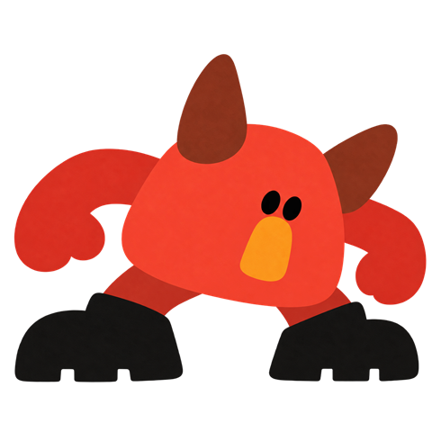
분노의 크기
n=6 · 범위 3~8 · 평균 5.6 — 지난 기간과 비슷해요.
분노에서 고른 말
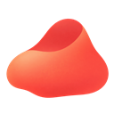
9월 2일 · 크기 8설정은 목록 한 장 → 하위 화면입니다. 목록 맨 위에 나의 돌 머리 한 줄(쉬는 돌 + '나의 기록 공간' + '내 기록은 나만 볼 수 있어요', 누르면 개인정보 안내)이 있고, 그 아래 하려는 일로 묶은 네 묶음 — 기록 리듬(작성 알림·알림 시각·하루 기준 시각) / 내 기록 지키기(개인정보 안내·내 기록 내보내기) / 도움과 안내(도움이 필요할 때·처음 화면 다시 보기) / 계정(접근 끊기) — 과 맨 아래 따로 떨어진 모든 기록 영구 삭제 한 줄입니다. 줄은 아이콘·이름·지금 값·›이고 설명은 하위 화면에만 있습니다. 작성 알림만 목록에서 바로 켜고 끕니다. 묶음 사이는 화면 폭 옅은 띠이고, 아이콘 칸은 조약돌 모양 면에 서비스 색을 옅게 섞습니다(기록 리듬 mint 34%, 내 기록 지키기 ink 9%).
하위 화면(#/settings/<화면>)은 하단 탐색 없이 원형 ‹ 뒤로만 있습니다. 값은 '알약 + 기기 시간 선택'(알림 시각)이나 '알약 일곱 개'(하루 기준 시각) 같은 결로 고릅니다.
이 시각 전에는 오늘 날짜를 전날로 봐요.
지금 설정이면 새벽 3시에 쓴 기록은 9월 24일 기록이 돼요.
AI 관여 경로에서 표시하고, 설정의 '도움이 필요할 때 보기'로도 열 수 있습니다 — 온보딩에는 이 입구가 없습니다(D-093, 2026-09-25). 감정 색·친구·조약돌·움직임을 쓰지 않고 중립 배경에 danger 테두리만 씁니다. 제목은 '혼자 견디지 않아도 돼요' 하나입니다 — 이전 제목 '지금 안전이 먼저예요'는 삭제했습니다(D-065 ①). 연락처는 검수 전이라 번호를 적지 않고 자리만 둡니다.
지금 바로 연락할 수 있는 곳이에요.
상자·빨간 테두리 없이 흰 바탕 위 연락처 줄, 가장 눈에 띄는 것은 전화 버튼이다(D-094). 번호는 data/crisis-resources/kr.json(공식 출처 확인, 임상·안전 검토 전)에서 읽고, 112·119는 파일 없이도 먼저 보인다. 시안(#/help)이 정본이다.
오늘 · 달력 · 통계 · 설정(D-035). 라벨은 보조기술에 남기고 화면에서는 아이콘만 보여 줍니다. 현재 항목은 면(filled) 아이콘과 둥근 방울로, 나머지는 선(outline) 아이콘으로 표시합니다 — 색만으로 현재 탭을 나타내지 않습니다. 작성 흐름·기록 상세·온보딩·안내 화면, 통계의 친구 상세·설정의 하위 화면에는 탐색이 없습니다. 알약 뒤는 흰 직사각형이 아니라 위 끝 24px가 흐려지는 흰 바탕이라 스크롤되는 글이 일자로 잘리지 않고 사라집니다(D-091 ③). 바탕에 따라 변형이 둘입니다.
밝은 화면 — ink 알약 위에서 민트 방울 하나가 현재 탭으로 320ms 안에 옮겨 가고, 활성은 ink 채운 아이콘·나머지는 흰 선 아이콘입니다(D-049·D-054).
어두운 숲(오늘 화면) — 하단 탐색이 없습니다(D-076). 그림이 아래 끝까지 이어지고, 다른 화면으로 가는 입구는 날짜 줄 오른쪽의 '지난 기록' 알약(달력 아이콘, D-090 ③) 하나입니다.
눈 두 점·입 없음·검은 신발, 자세와 정수리 장식으로 감정을 말합니다. 이름은 감정 이름을 반복하지 않고 그 감정이 마음속에서 하는 일을 순우리말로 설명합니다. 64px 미만에서는 단독으로 쓰지 않고 이름이나 색 점을 함께 둡니다. 설이(슬픔)와 숨이(공포)는 둘 다 청록 계열이라 몸 색만으로는 구분되지 않으니 이름·실루엣을 함께 둡니다. 쓰는 자리(D-061 ⑤): 마음 고르기·세부 감정·크기·완료·통계·달력 요약·빈 상태·온보딩. 오늘 화면(숲)과 위기 안내·AI 위기 전환·오류에는 나오지 않습니다(D-056의 '네 곳 제한'은 폐지). 큰 그림으로 상자·타일·다이컷 테두리 없이 서고 한 화면에서는 모두 같은 크기이며, 말하지 않고 글에 반응하지 않습니다(표정 변화·대사·응원 없음).
본문은 지금 유효한 설계만 남기고, 대체된 옛 설계와 옛 규칙은 모두 여기로 옮겼습니다. 항목마다 무엇이 어느 결정으로 대체됐는지 한 줄로 적습니다.
.card)에 한해 옅은 두 겹 그림자를 예외로 더했다. 더 이전에는 원형 순서의 요약 카드와 수정 링크였다 — D-063이 편지 카드로 대체했다.forest.sky 한 색으로 합쳤다..card)를 두 번째 예외로 더했다. 그 사이에는 오늘 화면 알림 배너의 유리도 예외였다 — D-077이 배너 자체를 없애며 사라졌다.D-051이 평면 친구를 확정했습니다. D-045 스타일은 참고 이미지의 엉뚱하고 포근한 손맛을 살린 크레용 + 색연필입니다. 얼굴 중심의 납작한 실루엣, 복슬하고 고르지 않은 검은 외곽선, 불투명한 색면과 단순한 표정을 쓰고, 광택 있는 3D·날카로운 벡터·사실적인 털·과한 공포 표현은 쓰지 않습니다.
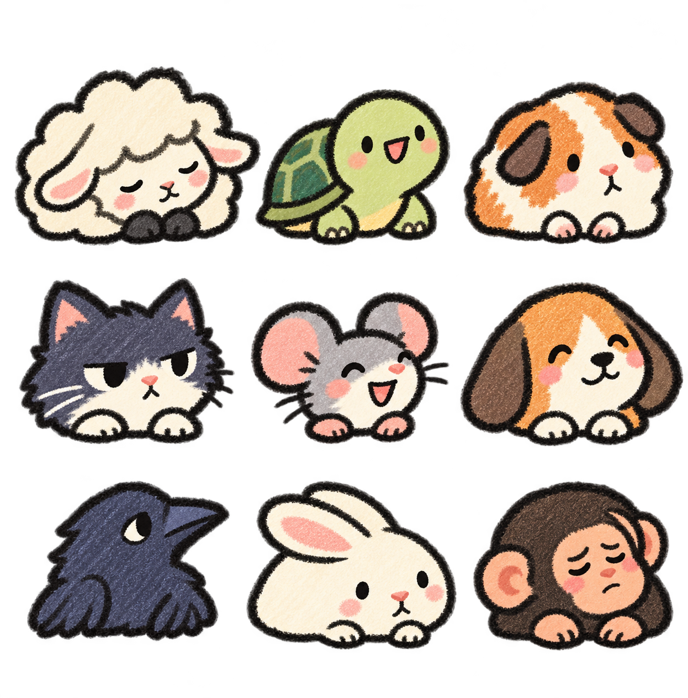
D-061이 친구 아홉을 한 화면에 세우는 방식으로 대체했습니다. 아래는 옛 설계의 동작 예시로 남겨 둡니다. 9개 상위 감정을 복수로 고릅니다. 위치와 연결선은 선택을 돕는 장식이며 심리 축이나 분석 결과가 아닙니다. 저장되는 값은 고른 카테고리 코드뿐입니다.
Tab으로 점 사이를 이동하고 Enter 또는 Space로 켜고 끕니다.
D-059가 이 목록을 계열별 화면·pill 구름으로 대체했습니다. 아래는 옛 설계의 동작 예시로 남겨 둡니다. 1열 목록은 단어 길이와 무관하게 가지런하고, 검색은 초성도 됩니다 — 슬픔을 고른 뒤 ㄱㄷ을 입력해 보세요.
슬라이더 + 항상 보이는 숫자 + −/+ 스테퍼였던 컨트롤 단면입니다. D-069 ①이 계열마다 친구·이름·큰 숫자와 함께 회색 길 위를 걷는 '길 위의 친구'(위 '크기 패널' 절)로 대체했습니다.
완료 화면과 같은 색 언덕 위에 아홉 친구가 서 있는 정적 그림 한 장이 온보딩 첫 쪽이었습니다. D-092가 앱 안 장면 모션의 여섯 장면 이야기로 대체했습니다 — 이야기의 ④~⑥장면은 같은 land 색 토큰을 다시 그려 쓰지만 흐름·걸음·전환이 있어 정지 그림 한 장으로는 옮기지 못합니다. 실제 장면은 web/js/views/welcome.js(#/welcome)가 정본입니다.